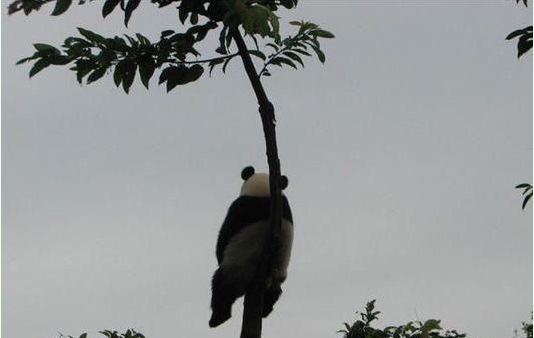
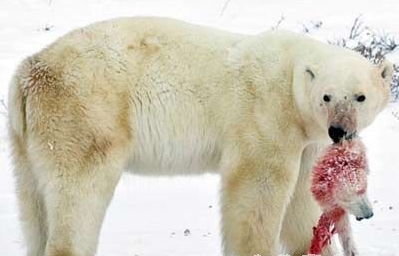
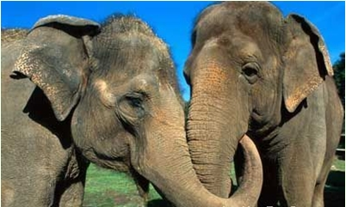
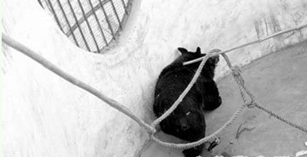
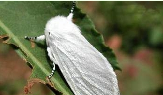
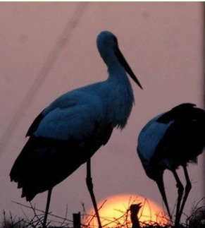
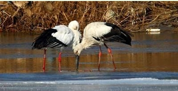
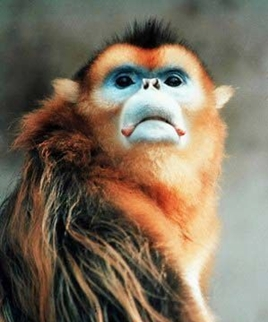
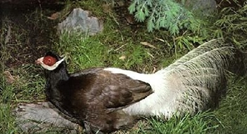
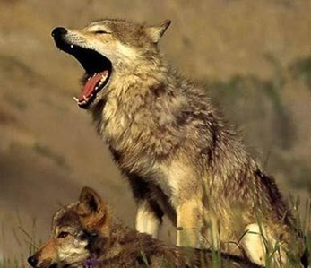

2009年度让动物悲剧盘点
1月5日报道 回首2009年，叱咤风云的不只是新闻“人物”，在这个不平凡的年度，也有很多不平凡的新闻“动物”引人关注。
年末岁初，中国绿色时报经过系统梳理，评出2009年度十大新闻动物，或许它们曾经离我们的
■大熊猫

入选理由：2009年12月19日，国家主席胡锦涛宣布，为庆贺澳门特区成立10周年，中央政府决定向澳门特别行政区赠送一对大熊猫。此前，胡锦涛主席在出访新加坡时也曾表示，中方愿向新加坡提供一对大熊猫进行合作研究。从频频出国，到助阵世博会的吉祥使者，再到熊猫大侠等影视新宠，憨态可掬的大熊猫一举一动都吸引着人们的眼球。而这还不是全部，2009年11月，一张孤独的大熊猫坐在树上仰望天空的照片迅速在网上蹿红，许多人认为这反映了目前都市人隔绝的生活状态，称之为“史上最寂寞的大熊猫”。而在照片背后，我们也应该看到，尽管大熊猫保护工作成效显著，但是就整个大熊猫种群的繁衍延续而言，人们需要做的事情还有很多。
入选感言：哥看的不是天空，是寂寞。
■印支虎
入选理由：2009年2月，云南省勐腊县大臭水村村民康万年、高祖桥在西双版纳国家级自然保护区尚勇自然保护区射杀一只印支虎，这只虎被媒体称作“中国最后一只印支虎”。隔日，康万年、高祖桥约了5个村民一起上山，残忍地将老虎剥皮后分割了虎骨、虎肉、虎头及虎爪等，各自背回家中吃掉。12月21日，勐腊县人民法院对非法猎杀“印支虎”一案进行一审宣判：被告人康万年获刑12年，并处罚金1万元，同时赔偿国家经济损失48万元；其他被告人分别被判处有期徒刑3年至1年不等，广受关注的“食虎案”终于尘埃落定，但死去的印支虎却再也回不来了。
入选感言：人们嘴巴一张一合，我“兽中之王”的一辈子就没了。
■北极熊

入选理由：当许多国家还在哥本哈根无休止地争吵的时候，北极地区曾经的霸主北极熊却在饱受饥饿之苦。由于全球气温升高，海洋冰层融化，北极熊的生存空间越来越小，食物严重匮乏。许多北极熊不得不靠猎食自己的同胞，来获得食物，在绝望中求得生存。科学家研究表示，2009年共发现8起北极熊群体内部自相残杀以获取生存食物的事件，这个数字比以往有大幅度的提高。哥本哈根气候峰会虽然结束了，但会议现场展示的一张北极熊自相残杀的照片仍然引人深思。
入选感言：嘴角舔着同伴的鲜血，我不知道还能不能看到明天的太阳！
■亚洲象

入选理由：近年来，云南西双版纳亚洲象肇事造成的损失每年都有600多万元，当地群众苦不堪言。2009年11月，中国第一份亚洲象公众责任保险合同在西双版纳傣族自治州签署，这是中国首次建立降低亚洲象侵害风险的商业保险制度，也是野生动物肇事赔偿由政府直接补偿转向商业保险赔偿进行的一次探索，将有可能实现政府、保护区、保险公司的“多赢”。从此，“大个子”惹得祸也有人买单了。
入选感言：呵呵，保险好啊，吃个苞谷、吞个
■黑熊

入选理由：2009年12月，河南省登封市动物园黑熊咬死与它共处多年的饲养员老谢，这一事件引起轩然大波，多家媒体纷纷跟进报道。然而，与黑熊咬死人的个例相比，大部分黑熊的境遇更加悲惨：在长达数十年的时间里，只能栖身于狭窄的铁笼内，看不见阳光也嗅不到泥土的芳香，连转个身也成为奢侈的事。著名主持人赵忠祥看到黑熊的悲惨处境时潸然泪下，人气组合风云将在全国10个城市进行爱心接力，一路唱响“拯救黑熊爱心主题曲”——《唤醒爱》，呼吁人们更加关注黑熊的遭遇。
入选感言：不该咬人啊，可是关久了我也
■美国白蛾

入选理由：在山东，美国白蛾被称为“帽子害虫”：因防治工作不利，造成虫灾爆发的，将摘掉责任人的“乌纱帽”。就是这样一只小小的害虫，让山东省委书记姜异康、省长姜大明在一年之中多次作出批示，并亲赴全省各地调研检查防治工作。山东省更是全省动员，上下齐心，喷洒农药，释放天敌，甚至干脆动用经济杠杆，政府花钱收购村民们捕捉的美国白蛾。一只小小的飞虫究竟能有多大的危害？由此可见一斑。
入选感言：都说外来的和尚会念经，其实，外来的害虫我更可怕，嘿嘿嘿嘿！
■东方白鹳


入选理由：这是全世界最濒危鸟种之一，中国一级保护动物，全世界仅有3000多只。2009年11月，东方白鹳第一次现身钱塘江，这本来是杭州市民的一大幸事。然而就在发现东方白鹳的同时，人们不愿意看到的一幕也发生了。浙江野鸟会成员吴志华在拍摄东方白鹳时，发现其中一只的左腿被鸟夹夹住，带着夹子飞行。此后，又有人发现一只东方白鹳因被投毒径直从天空栽倒在了滩涂上。难道人们仅仅欣赏它们的美丽优雅还不够，非要它们付出生命的代价吗？
入选感言：除了人类斑马线上的悲剧，钱塘潮起潮落间你们知道我的多少同类在哭泣？
■金丝猴

入选理由：如果问你，在猴子族群中哪一种最漂亮，很多人会不约而同地回答：金丝猴。金丝猴是中国特有的珍稀灵长类动物，被列入国家一级保护动物。在所有金丝猴种群中，湖北神农架金丝猴的知名度最高、数量最少、遗传多样性最低，具有极重要的研究和保护价值。2009年9月，神农架金丝猴种群数量首次超过1000只，形成了我国独特的金丝猴“部落”。由最初的几十只繁衍到现在的1280余只，这中间凝聚了几代野生动物保护者的心血和汗水。
入选感言：“野人”是“谜”人，而我猴哥则真的是“迷”人！
■褐马鸡

入选理由：褐马鸡羽色呈油亮的黑褐色，生性勇猛善斗，宁死不屈。被称为“东方宝石”的褐马鸡是我国特有的珍稀动物，中国鸟类学会就把褐马鸡的形象设计成了会标。然而与大熊猫、朱鹮不同，褐马鸡的出镜率显然要低了很多。2009年，山西省在开展野生动物资源调查时，在长治市灵空山省级自然保护区首次发现了野生褐马鸡种群。据灵空山省级自然保护区介绍，天然林保护工程实施近10年来，该地区森林资源有了明显改善，为褐马鸡种群安家落户提供了良好环境。看来，只有更好的保护我们的生态环境，“东方宝石”才会发出更加夺目的光彩。
入选感言：不要迷恋俺，俺只是个传说。
■草原狼

入选理由：狡诈、勇敢、机智、凶残、雄心、耐性、不畏艰险……这些都曾经是草原狼的代名词，它们在与对手一次次的交锋中，通过精密的分析、布阵，准确攻击，一次次从死亡边缘胜利归来。然而如今再提到草原狼，我们不得不加上这样一个形容词：脆弱。2009年春天，草原狼群再现河西走廊，袭击了牧民的牦牛群，当村民们知道凶手是久违的草原狼群时，没有过多追究，因为世代放牧的他们明白，保护草原狼也是在保护草原的生态。此外，内蒙古多名政协委员也已多次建言，希望人们更多地保护草原狼。
入选感言：披上羊皮，可能不是奸诈，是因为我也很害怕。